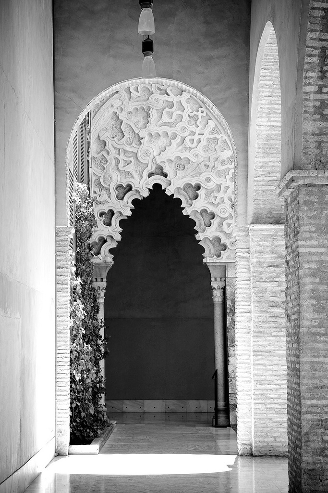

Raz tylko, nie więcej
Nie mamy nigdy, choćby przez dzień jeden, przed sobą czystej przestrzeni…
Jesteśmy jak widzowie, zawsze i wszędzie skłonieni ku rzeczom. Zwróceni ku istnieniu, widzimy jedynie odbicie wolnej przestrzeni, przyćmione przez nas samych. Odwróconym wzrokiem patrzymy na świat form. Żyjemy wiecznie się żegnając.
W roku 1914 Rilke pisze wiersz, który zatytułuje „Przemiana”. Jakby poeta przeczuwał konieczność przełomu, jaki musiał się dokonać w jego twórczości. Oto nadszedł dlań kres patrzenia, którym artysta od dawna wygrywał, rzucając na kolana gwiazdy, kiedy mocował się z nimi wzrokiem. Krajobraz, za dnia przeładowany obrazami, odpoczynku szukał pod wieczór w zaciszu jego postrzeżeń. Istnieje bowiem — mówi poeta — granica patrzenia. Świat ujrzany pragnie zakwitnąć w miłości. „Dokonało się dzieło spojrzenia — powiada Rilke — czyń teraz dzieło serca, przy obrazach, co w tobie więzione”.
Owo „dzieło spojrzenia” — twórczość zrodzona z obserwacji rzeczywistości, utrwalona na papierze pod wpływem bodźców, wrażeń, nastrojów płynących z realności świata widzialnego — znalazło swój wyraz w rozlicznych utworach, tchnących głębią i siłą artystycznej wypowiedzi. Lecz nadszedł czas, by porzucić to, co rzeczywiste, widzialne, i zwrócić swą myśl ku niewidzialnemu, ku światu istniejącemu poza rzeczywistością, w której zanurzony jest człowiek; czas wyrażenia w słowach transcendencji, tego, co niedostępne ludzkiemu poznaniu.
„Dzieło serca” spełniło się w zdumiewającej erupcji twórczego natchnienia, dzięki któremu Rilke, w sposób ostateczny, zaklął w słowa wszystkie swe przemyślenia związane z tematami i problemami, jakie nurtowały go przez całe życie. Przelewając na papier wersy „Elegii duinejskich” oraz „Sonetów do Orfeusza”, stworzył obrazy niezrównanego artyzmu, odurzające wprost swą niewyobrażalną potęgą i śmiałością poetyckiej wyobraźni. Miłość i śmierć, będąca dlań dopełnieniem życia, jego niewidzialną stroną, a nie jego przeciwieństwem i negacją. Tajemnice ludzkiej świadomości i jej związków ze światem przyrody. Bogactwo i waga przeżyć okresu dzieciństwa. Radości, tęsknoty, lecz i ograniczenia ziemskiej egzystencji człowieka, skazanej na nieuchronne przemijanie.
Ale że ziemski byt znaczy wiele i że wszystkiemu tutaj
jesteśmy na pozór potrzebni, całej tej znikomości,
co nas przedziwnie dotyczy. Nas, najbardziej znikomych. Raz tylko,
wszystko tylko raz jeden. Raz i nie więcej. My także
raz tylko.
A zatem raz tylko, nie więcej. Jeśli błądzimy, jeśli fałszywie interpretujemy znaki czasu, tworząc ułudną opowieść, cóż nam pozostaje? Jedynie nadzieja, że w rzeczywistości nasze istnienie z czasem rozkwitnie, otwierając nowy, nieznany dotychczas rozdział kart naszego życia.
Fragment wiersza „Przemiana” w przekładzie A. Pomorskiego, fragmenty „Elegii duinejskich” w przekładzie M. Jastruna.